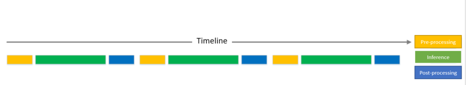
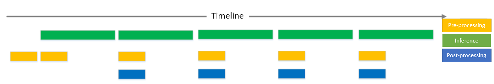
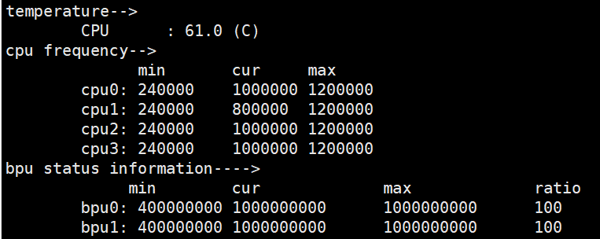
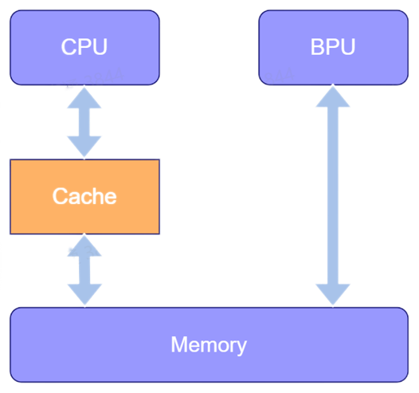

4. Application Development
4.1. General Descriptions
This chapter describes how to develop applications, how to deploy and run converted models in Horizon’s platform and some matters need attention.
Attention
Prior to application development, please be sure that you’ve completed the development environment preparations as described in the: Prerequisites chapter.
The simplest application development can be divided into 3 stages: project creation, project implementation and operation. However, given the fact that the development of actual business scenarios are more complicated, here we’d like to offer more instructions about the concept of multi-model control and suggestions on application tuning.
4.2. Create A New Project
It is recommended by Horizon to manage your application development engineering using CMake. As described in the Prerequisites chapter, by now, you should have installed CMake. Before reading this section, you’re expected to understand how to use CMake.
Horizon’s development library provides arm architecture based dependency environment and deb board application programs. Engineering dependency information for arm programs are listed as follows:
Horizon evaluation library libdnn.so in the: ~/.horizon/ddk/xj3_aarch64/dnn/lib/ directory.
Horizon compiler dependency libhbrt_bernoulli_aarch64.so in the: ~/.horizon/ddk/xj3_aarch64/dnn/lib/ directory.
Horizon X/J3 AI Processors system dependencies in the: ~/.horizon/ddk/xj3_aarch64/appsdk/appuser/ directory.
The aarch64-linux-gnu-gcc C compiler.
The aarch64-linux-gnu-g++ C++ compiler.
To create a new project, users need to compile the CMakeLists.txt file. The script defines the path to compiler tool, the CMakeLists.txt file defines the paths to some compilation options, dependency libs and header files. Refer to below code block:
cmake_minimum_required(VERSION 2.8)
project(your_project_name)
set(CMAKE_CXX_FLAGS "${CMAKE_CXX_FLAGS} -std=c++11")
set(CMAKE_CXX_FLAGS_DEBUG " -Wall -Werror -g -O0 ")
set(CMAKE_C_FLAGS_DEBUG " -Wall -Werror -g -O0 ")
set(CMAKE_CXX_FLAGS_RELEASE " -Wall -Werror -O3 ")
set(CMAKE_C_FLAGS_RELEASE " -Wall -Werror -O3 ")
if (NOT CMAKE_BUILD_TYPE)
set(CMAKE_BUILD_TYPE Release)
endif ()
message(STATUS "Build type: ${CMAKE_BUILD_TYPE}")
# define dnn lib path
set(DNN_PATH "~/.horizon/ddk/xj3_aarch64/dnn/")
set(APPSDK_PATH "~/.horizon/ddk/xj3_aarch64/appsdk/appuser/")
set(DNN_LIB_PATH ${DNN_PATH}/lib)
set(APPSDK_LIB_PATH ${APPSDK_PATH}/lib/hbbpu)
set(BPU_libs dnn cnn_intf hbrt_bernoulli_aarch64)
include_directories(${DNN_PATH}/include
${APPSDK_PATH}/include)
link_directories(${DNN_LIB_PATH}
${APPSDK_PATH}/lib/hbbpu
${APPSDK_PATH}/lib)
add_executable(user_app main.cc)
target_link_libraries(user_app
${BPU_libs}
pthread
rt
dl)
Note
In the above sample, the compiler’s postion was not specified and is to be specified at the project compilation stage. Please refer to the descriptions in the: Compile And Run The Project section.
4.3. Implement The Project
This section explains how to run the aforementioned converted bin models in Horizon’s platform. The simplest procedure should cover: model loading, input data preparations, output memory preparations, inference and result parsing. Please refer to below model loading and deploying sample code:
#include <iostream>
#include "dnn/hb_dnn.h"
#include "dnn/hb_sys.h"
int main(int argc, char **argv) {
// Step 1: load the model
hbPackedDNNHandle_t packed_dnn_handle;
const char* model_file_name= "./mobilenetv1.bin";
hbDNNInitializeFromFiles(&packed_dnn_handle, &model_file_name, 1);
// Step 2: obtain model names
const char **model_name_list;
int model_count = 0;
hbDNNGetModelNameList(&model_name_list, &model_count, packed_dnn_handle);
// Step 3: obtain dnn_handle
hbDNNHandle_t dnn_handle;
hbDNNGetModelHandle(&dnn_handle, packed_dnn_handle, model_name_list[0]);
// Step 4: prepare input data
hbDNNTensor input;
hbDNNTensorProperties input_properties;
hbDNNGetInputTensorProperties(&input_properties, dnn_handle, 0);
input.properties = input_properties;
auto &mem = input.sysMem[0];
int yuv_length = 224 * 224 * 3;
hbSysAllocCachedMem(&mem, yuv_length);
//memcpy(mem.virAddr, yuv_data, yuv_length);
//hbSysFlushMem(&mem, HB_SYS_MEM_CACHE_CLEAN);
// Step 5: prepare space for model output data
int output_count;
hbDNNGetOutputCount(&output_count, dnn_handle);
hbDNNTensor *output = new hbDNNTensor[output_count];
for (int i = 0; i < output_count; i++) {
hbDNNTensorProperties &output_properties = output[i].properties;
hbDNNGetOutputTensorProperties(&output_properties, dnn_handle, i);
// Obtain model output size
int out_aligned_size = 4;
for (int j = 0; j < output_properties.alignedShape.numDimensions; j++) {
out_aligned_size =
out_aligned_size * output_properties.alignedShape.dimensionSize[j];
}
hbSysMem &mem = output[i].sysMem[0];
hbSysAllocCachedMem(&mem, out_aligned_size);
}
// Step 6: inference
hbDNNTaskHandle_t task_handle = nullptr;
hbDNNInferCtrlParam infer_ctrl_param;
HB_DNN_INITIALIZE_INFER_CTRL_PARAM(&infer_ctrl_param);
hbDNNInfer(&task_handle,
&output,
&input,
dnn_handle,
&infer_ctrl_param);
// Step 7: wait until the end of the task
hbDNNWaitTaskDone(task_handle, 0);
// Step 8: parse model output, the sample is to obtain TOP1 class of MobileNetv1
float max_prob = -1.0;
int max_prob_type_id = 0;
hbSysFlushMem(&(output->sysMem[0]), HB_SYS_MEM_CACHE_INVALIDATE);
float *scores = reinterpret_cast<float *>(output->sysMem[0].virAddr);
int *shape = output->properties.validShape.dimensionSize;
for (auto i = 0; i < shape[1] * shape[2] * shape[3]; i++) {
if(scores[i] < max_prob)
continue;
max_prob = scores[i];
max_prob_type_id = i;
}
std::cout << "max id: " << max_prob_type_id << std::endl;
// Free data
hbSysFreeMem(&(input.sysMem[0]));
hbSysFreeMem(&(output->sysMem[0]));
// Free the model
hbDNNRelease(packed_dnn_handle);
return 0;
}
To keep it simple, some data in above sample use known constants.
But in development, you should obtain size and data type using the
hbDNNGetInputTensorProperties/hbDNNGetOutputTensorProperties etc. interfaces.
Note
At the input data preparations stage, a snippet of the memcpy code is commented out at input data preparation stage.
This snippet refers to the step to prepare input sample
based on model’s input format and copy it into the input.sysMem[0]. The aforementioned input_type_rt and
input_layout_rt parameters jointly determine the types of model input. Please refer to the descriptions in the:
Model Conversion Interpretation section for more information.
More comprehensive engineering guidance please refer to the: BPU SDK API document.
4.4. Compile And Run the Project
Along with CMake engineering configurations as described in the Create A New Project section, please see below compilation script:
# define gcc path for arm
LINARO_GCC_ROOT=/opt/gcc-linaro-6.5.0-2018.12-x86_64_aarch64-linux-gnu/
DIR=$(cd "$(dirname "$0")";pwd)
export CC=${LINARO_GCC_ROOT}/bin/aarch64-linux-gnu-gcc
export CXX=${LINARO_GCC_ROOT}/bin/aarch64-linux-gnu-g++
rm -rf build_arm
mkdir build_arm
cd build_arm
cmake ${DIR}
make -j8
Based on the descriptions in the Prerequisites chapter, you should’ve installed the required compiler, so here you only need to configure your compiler for your project in the above script.
Copy and run your arm programs in Horizon’s dev board and do not forget to copy the dependency files of the programs to the dev board, too. Then configure dependencies in the startup script. For example, dependency of our sample program is: libhbrt_bernoulli_aarch64.libdnn.so and libdnn.so. They are in the ~/.horizon/ddk/xj3_aarch64/dnn/lib/ directory and must be copied in the the operating environment in the dev board. You’re recommended to copy the libraries into the /userdata/lib directory, so that the dependency path information you should specify is as below:
export LD_LIBRARY_PATH=$LD_LIBRARY_PATH:/userdata/lib
4.5. Multi-model Control Strategy
4.5.1. Group Control Strategy
Resource contention is inevitable in those scenarios where multiple models exist as each model has to execute inference using limited resources. To facilitate your multi-model execution, Horizon presents the model preemption control strategy.
4.5.2. Model Preemption Control
There isn’t task preemption feature in the BPU computing unit hardware of the X3/J3 ASICs. Each inference task, once entered the BPU and begins model computing, it always occupies the BPU till the end of the task. Hence other tasks have to wait in line.
This can cause the problem that the BPU computing resources are constantly occupied solely by an enormous inference task and affect the inference executions of other higher priority models. To tackle such problem, the Runtime SDK can, based on model priority, implement the BPU resource preemption feature through software.
Please pay attention to the following factors:
When executing inference in BPU, the compiled data command model are denoted by 1 or more function-call(s). The function-call refers to BPU’s atomic execution unit and multiple function-call tasks line up in BPU hardware line and are distributed sequentially. A model inference task will be considered accomplished when all of it function-calls are executed.
Based on the above descriptions, we can see that it is easier that the basic unit of the model task preemption is designed as function-call, so that when BPU finishes executing a function-call, it can suspend the existing model for now, switch to execute another model, then resume executing the previous model when the latter was executed. However there are 2 problems, the first problem is that the compiler compiled model function-calls are merged together, in other words, these is only one function-call which cannot be preempted; the second problem is that the execution time of each function-call varies, it can be either very prolonged or uncertain, and therefore makes the timing to preempt uncertain, or affect the results of preemption.
To solve the above-mentioned 2 problems, Horizon provides support in model conversion and system software layers. Here below describes the implement principles and way to proceed:
Firstly, at model conversion stage, specify the
max_time_per_fcparameter in thecompiler_parametersof YAML configuration file. This parameter is used for specifying the execution time (in microsecond) of each function-call, whose default value is0(i.e. no limits). Let’s assume that the execution time of a certain function-call is 10ms, so when compiling the model, by specifying themax_time_per_fcas500, this function-call will be split into 20 function-calls.Secondly, there is a
BPLAT_CORELIMITenvironment variable used for specifying the granularity of model preemption. If specified as0, the model preemption will be disabled. Therefore, to execute higher-priority tasks ASAP, when you develop with the devboard, first runexport BPLAT_CORELIMIT=1to specify this environment variable as1, so that when the underlying layer of the system receive function-calls, it will determine the priority and put those high priority tasks into an independent queue, thus when one function-call is executed, the higher-priority task will be able to preempt BPU.Nextly, as the model preemption mechanism is implemented in the libdnn, continue to specify the
hbDNNInferCtrlParam.priorityparameter provided by theinferAPI ofdnnasHB_DNN_PRIORITY_PREEMP(255), so that your task will become a high-priority task. You are free to specify the priority amongst[0,255], so that in a task queue, the higher priority, the earlier it will be executed. Please note that presently DNN can only support executing as much as 8 tasks. In other words, if there are already 8 tasks underway, model preemption will become invalid, until one of the tasks are executed.
4.6. Suggestions On Application Optimization
Horizon suggested application optimization strategy includes 2 perspectives: engineering task scheduling and algorithm task integration.
In terms of engineering task scheduling, we recommended you to utilize some workflow scheduling management tools, in order to make full use of the parallel-processing ability at different task stages. Typical an AI application can be divided into 3 stages: pre-processing, model inference and output post-processing. The simplified workflow is shown as below:
To implement parallel-processing at different stages by taking full advantages of the workflow management, the ideal task processing workflow can be as shown below:
You’re recommended to use the XStream workflow management tool, please refer to the: XStream algorithm SDK Development Framework Document.
Surely the XStream is not a required tool and you are welcome to choose your own-developed or familiar workflow management strategies depending on your own needs.
In terms of algorithm task integration, Horizon recommends you to utilize multi-task models. Because it can on the one hand to a certain extend avoid the difficuties brough by the management of multi-model scheduling; On the other hand, multi-task model can also share the computing volume of the backbone to the full, and compared with using single models, it can apparently decrease computing volume at the entire AI application level and therefore reach higher overall performance. Based on Horizon’s past cooperation with a large number of customers, multi-task is a frequently-used application optimization strategy.
4.7. Other Dev Tools
4.7.1. The hrt_bin_dump Tool
Input Parameters
NO. |
PARARMETERS |
TYPE |
ITEM |
DESCRIPTIONS |
1 |
|
string |
Path to model file. |
The model must be debugging model, i.e., model compilation parameter it is used for specifying dumping intermediate results during conversion. |
2 |
|
string |
Path to input file. |
It denotes the model input file, it can support all input types of IMG files must be in binary (i.e. whose file suffix must be .bin). The size of the binary file should match model input information. E.g. size of the YUV444 file should be \(height*width*3\). TENSOR type files must be either binary file or txt file (i.e. whose suffix must be either .bin or .txt), size of the binary file must match the model input file, and the txt file size must be larger than the model required input size, redundant data will be abandoned. Each input file should be separated by a comma, e.g. if there are 2 inputs, then |
3 |
|
string |
The configuration file of model convolutional layer. |
It denotes the configuration file of model layers. There must be information of all layers in it. This file is generated during model compilation and typically its name looks like the below: |
4 |
|
string |
Tool output path. |
Tool output path. The path must be a legal one. |
Usage
This tool is used for dumping the output of all convolutional layers.
Run hrt_bin_dump to see more details about this tool, as shown below:
Note
Below console output may vary due to tool version difference, here is only an example.
Usage:
hrt_bin_dump [Option...] [Parameter]
[Option] [Parameter]
---------------------------------------------------------------------------------------------------
--model_file [string]: Model file path, model must be debug model.
--conv_mapping_file [string]: conv mapping file path, json file.
--input_file [string]: Input file paths, separate by comma, each represents one input.
The extension of files should be one of [bin, txt].
bin for binary such as image data, nv12 or yuv444 etc.
txt for plain data such as image info.
--conv_dump_path [string]: output path of conv output file
[Examples]
---------------------------------------------------------------------------------------------------
hrt_bin_dump
--model_file
--input_file
--conv_mapping_file
--conv_dump_path
Samples
Take the MobileNetv1 model as an example, create a folder named outputs and run below command:
./hrt_bin_dump --model_file=./mobilenetv1_hybrid_horizonrt.bin --conv_mapping_file=./mobilenetv1_quantized_model_conv_output_map.json --conv_dump_path=./outputs --input_file=./zebra_cls.bin
Execution log refer to below screenshot:

You can see command output in the outputs/ folder, refer to below screenshot:

4.7.2. The hrt_model_exec Tool
General Description
The hrt_model_exec tool is a model execution tool who can evaluate model’s performance in inference and obtain information.
Not only does it allow users to obtain models’ realistic performance, it can also help users understand models’ speed upper bound and
further optimize their applications.
The hrt_model_exec tool consists of three following features:
The infer model inference feature; the perf model performance analysis feature and the model_info model information feature.
Refer to below table:
NO. |
SUB_COMMAND |
DESCRIPTIONS |
1 |
|
is used for obtaining model information, e.g.: model input/output information etc. |
2 |
|
is used for running model inference and obtaining inference results. |
3 |
|
is used for analyzing model performance so as to obtaining performance analysis results. |
Input Parameters
NO. |
PARAMETERS |
TYPE |
DESCRIPTIONS |
1 |
|
string |
denotes model file path. Multiple paths should be separated by comma. |
2 |
|
string |
is used for specifying a model name. |
3 |
|
int |
is used for specifying the core to run model. |
4 |
|
string |
denotes model input information. Multiple inputs should be separated by comma. |
5 |
|
bool |
is used for enabling the post-process of classification. |
6 |
|
bool |
is used for enabling dumping model input/output. |
7 |
|
string |
is used for dumping mode input/output formats. |
8 |
|
int |
is used for controlling the line breaking rule of input/output in txt format. |
9 |
|
string |
is used for specifying the saving path of model performance/performance scheduling data. |
10 |
|
int |
is used for specifying the number of frames in model run. |
11 |
|
int |
is used for specifying the duration of model run. |
12 |
|
int |
is used for specifying number of threads in program execution. |
Usage
This tool has 3 features: obtaining model information, single-frame inference and multi-frame model evaluation.
Run hrt_model_exec, hrt_model_exec -h or hrt_model_exec --help to get more details about this tool.
As shown below:
Note
Below console output may vary due to tool version difference, here is only an example.
Usage:
hrt_model_exec [Option...] [Parameter]
[Option] [Parameter]
---------------------------------------------------------------------------------------------------------------
--model_file [string]: Model file paths, separate by comma, each represents one model file path.
--model_name [string]: Model name.
When model_file has one more model and Subcommand is infer or perf,
"model_name" must be specified!
--core_id [int] : core id, 0 for any core, 1 for core 0, 2 for core 1.
--input_file [string]: Input file paths, separate by comma, each represents one input.
The extension of files should be one of [jpg, JPG, jpeg, JPEG, png, PNG, bin, txt]
bin for binary such as image data, nv12 or yuv444 etc.
txt for plain data such as image info.
--enable_cls_post_process [bool] : flag for classification post process, only for ptq model now.
Subcommand must be infer.
--enable_dump [bool] : flag for dump infer output. The default is false. Subcommand must be infer.
--dump_format [string]: output dump format, only support [bin, txt]. The default is bin.
Subcommand must be infer.
--dump_txt_axis [int] : The txt file of dump is expanded according to the specified axis;
the default is 4, which means there is only one data per line
(for 4-dimensional data); Subcommand must be perf, dump_format must be txt
--profile_path [string]: profile log path, set to get detail information of model execution.
--frame_count [int] : frame count for run loop, default 200, valid when perf_time is 0.
Subcommand must be perf.
--perf_time [int] : minute, perf time for run loop, default 0.
Subcommand must be perf.
--thread_num [int] : thread num for run loop, thread_num range:[0,8],
if thread_num > 8, set thread_num = 8. Subcommand must be perf.
[Examples]
---------------------------------------------------------------------------------------------------------------
hrt_model_exec model_info | hrt_model_exec infer | hrt_model_exec perf
--model_file | --model_file | --model_file
--model_name | --model_name | --model_name
| --core_id | --core_id
| --input_file | --frame_count
| --enable_cls_post_process | --perf_time
| --enable_dump | --thread_num
| --dump_format | --profile_path
| --dump_txt_axis |
4.7.2.1. The model_info Sub-command
This parameter is used for obtaining model information of the PTQ solution generated *.bin model.
It can be used in conjunction with the model_file parameter to get detailed model information, including:
model input/output hbDNNTensorProperties and model segment information stage.
The model segment information means that an image can be divided into and thus inferenced by multiple segments.
The stage information: [x1, y1, x2, y2] are in correspond with the upper left and bottom right image coordinates.
Currently Horizon’s J5 (Journey 5) ASIC can support model inference with such segment information.
However, the XJ3 (Sunrise/Journey 3) ASICs can only support inferencing model with 1 stage.
When model_name is unspecified, information of all models will be dumped;
otherwise only the information of the specified models will be dumped.
Samples
Dump single model information.
hrt_model_exec model_info --model_file=xxx.bin
Dump information of multiple models (all models).
hrt_model_exec model_info --model_file=xxx.bin,xxx.bin
Dump information of multiple packed models (only specified models).
hrt_model_exec model_info --model_file=xxx.bin --model_name=xx
4.7.2.2. The infer Sub-command
General Description
This parameter is used for model inference. Users can use specified image to inference a single frame.
This parameter should be used in conjunction with the input_file parameter in order to specify input image path,
the tool can resize image based on model information and process model input information.
When using this tool, the program will execute single frame data in single thread and dump model execution time.
Samples
Inference a single model.
hrt_model_exec infer --model_file=xxx.bin --input_file=xxx.jpg
Inference multiple models.
hrt_model_exec infer --model_file=xxx.bin,xxx.bin --model_name=xx --input_file=xxx.jpg
Optional Parameters
PARAMETERS |
DESCRIPTIONS |
|
is used for specifying the core ID in inference, 0: random core, 1: core0, 2: core1. Default = |
|
|
|
is used for dumping model output data. Default = |
|
is used for dumping output file type. Options are either |
|
dumps the line breaking rules of txt model output; if output dimension equals n, then parameter range will be [0,n], default is |
4.7.2.3. The perf Sub-command
General Description
This parameter is used for evaluating model performance.
In this mode, users don’t need to input data, the program will automatically build input tensor based on model information,
tensor data are random numbers. The program will run 200 frames by default, and when the perf_time parameter is specified,
the frame_count will become invalid, and the program will exit when specified time is executed.
Latency and frame rate information will be dumped every 200 frames. Latency information includes: max, min and avg latency.
The performance data will still be printed even if the program ends in less than 200 frame.
Running related data will be dumped at the end of the program including: number of thread, number of frame, total inference time, average inference latency and frame rate information.
Samples
Evaluate a single model.
hrt_model_exec perf --model_file=xxx.bin
Evaluate multiple models.
hrt_model_exec perf --model_file=xxx.bin,xxx.bin --model_name=xx
Optional Parameters
PARAMETERS | DESCRIPTIONS |
||
|
||
|
is used for specifying number of frames in It will become valid when the |
|
|
is use for specifying time of |
|
|
is used for specifying number of thread to run the program. Range [0, 8]. Default value = |
|
|
is used for specifying the path to generating profile log. The profiler.log is used for analyzing the time consumptions of OP and dispatching. |
|
Multi-thread Latency Descriptions
The purpose of multi-thread is to make full use of BPU resources.
Run multi-threads to process frame_count frame data simultaneously or execute perf_time time, till the end of data process.
You can run below command in multi-thread perf to get BPU resource occupation in real-time fashion.
hrut_somstatus -n 10000 –d 1
Refer to below output:
Note
In perf mode, the single thread latency time denotes onboard model performance;
while multi-thread latency data denote single-frame model processing time of each thread.
Compared with single thread, multi-thread execution is longer in time, yet shorter in total execution time and improved frame rate.
Multi-input Model Descriptions
The infer tool can inference multiple multiple models. It also can support image file, binary file and text file as input.
Input data should be separated by comma. Use model_info to view model input information.
Samples
hrt_model_exec infer --model_file=xxx.bin --input_file=xxx.jpg,input.txt
Repeated Input
Repeatedly inputting the same parameter can cause parameter overwrite. For example, if a model file is repeatedly inputted twice when trying to get the model information, then the latter will become valid.
hrt_model_exec model_info --model_file=xxx.bin --model_file=yyy.bin
If the --model_file parameter is not specified when repeatedly inputting models, the value after command-line parameter will be valid,
and the value without command-line parameter will be invalid, e.g., in below example, yyy.bin will be ignore while xxx.bin will be
valid:
hrt_model_exec model_info --model_file=xxx.bin yyy.bin
So as other repetition behaviors.
input_file
Refers to image type input whose file suffix must be among bin / JPG / JPEG / jpg / jpeg.
File suffix of feature input must be either bin or txt.
Each input should be separated by comma ,, e.g. xxx.jpg,input.txt.
profile_path
Refers to the directory in which profile log files are kept.
By specifying the HB_DNN_PROFILER_LOG_PATH parameter, users can view the time consumptions of OP and task dispatching.
usually --profile_path="." is ok, it denotes that the profile log will be generated in current directory with the name profiler.log.
enable_cls_post_process
This parameter is used for enabling the post-process of classification.
It must be used in conjunction with the infer sub-command. Currently it can only support PTQ classification models and
classification results can be printed when specified to True. Refer to below image:

4.8. FAQ
4.8.1. How to convert camera dumped NV12 images into other formats e.g. BGR etc.?
Horizon’s X3/J3 ASICs don’t come with hardware accelerator to convert pixel space, so some customers hope to accelerate pixel space conversion using BPU via API interfaces. But to avoid BPU’s inference efficiency to be affected by such feature, after rigorous evaluations, we’ve decided not to open up the interfaces for now.
However, users can still accelerate this operation in ARM CPU using the open source libYUV lib. Throughout test, when converting 720P NV12 images into BGR, conversion latency was shortened by 7ms and can satisfy business requirements in most scenarios.
You can either compile the libYUV lib using the linaro_gcc-6.5.0 cross compilation tool or seek for help in Horizon’s community. We can open the source code and pre-compiler lib of the Horizon optimized libyuv internal edition, or obtain from our source code of the opensource AI Express component: https://github.com/HorizonRobotics-Platform/AI-EXPRESS/tree/master/deps/libyuv/include/libyuv.
4.8.2. What is BPU memory Cache?
As described in the BPU SDK API DOC,
the hbSysAllocCachedMem and hbSysAllocMem BPU memory functions are used for allocating BPU read/write memory.
One of the parameters called hbSysAllocCachedMem is used for denoting those cachable memory space,
and the supporting hbSysFlushMem function is used for refreshing Cache.
The cache mechanism is determined by the Bernoulli memory architecture of the BPU, please refer to below graph. The cache between CPU and memory can cache data, while there isn’t a cache between BPU and memory. Therefore, the mistaken use of cache can cause data reading/writing accuracy and efficiency problems.
When CPU writes data, i.e. BPU reads data from the CPU written memory, as data will be cached into the cache, it is possible that data in memory are out-of-date, so that BPU will execute mistaken data. Therefore, the data in cache must be actively flushed into memory after CPU writes.
When BPU writes data, i.e. the model dumped memory in BPU, if CPU ever read data in memory, then data could be cached into cache. So when BPU rewrites memory, CPU will still firstly read the mistaken data from cache. So data in cache must be deleted after BPU writes memory.
So in the scenario when CPU writes exclusively for BPU to read without reading in any other subsequent scenarios,
it is recommended to specify the cachable parameter as non-cachable in order to avoid flush for once.
While in the scenario when BPU writes for CPU to parse just once, it is also recommended to
specify the cachable parameter as non-cachable. However, if the memory were to be loaded multiple times,
e.g. model output, then it is recommended to specify the cachable parameter as cachable in order to
accelerate CPU’s reading efficiency.
4.8.3. Understand the physical and virtual addresses in BPU memory
In Bernoulli micro architecture, BPU and CPU share a common memory space who can be allocated by
the hbSysAllocMem function into a physically contiguous space for BPU reading/writing.
The function returns are capsulated into a struct called hbSysMem, it contains the phyAddr and virAddr
fields that respectively denote the physical and virtual addresses of the memory space.
Because this memory space is contiguous, it can be denoted by the starting address of the physical/virtual addresses and
read/write the corresponding memory. But in reality, it is suggested to use the virtual address of the hbSysMem,
and try not to use the physical address unless it is necessary.